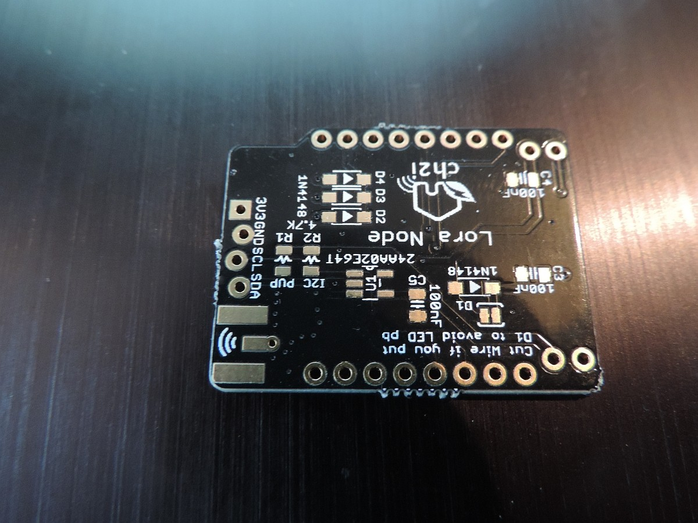
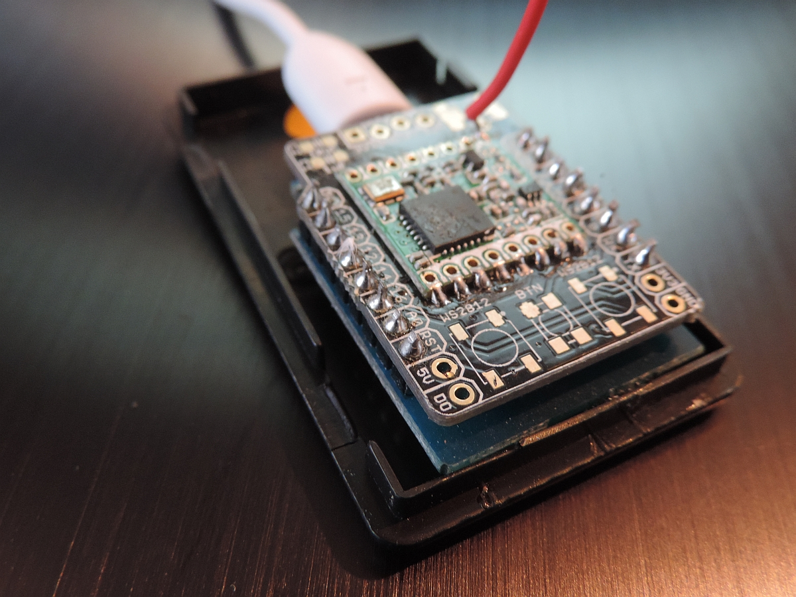
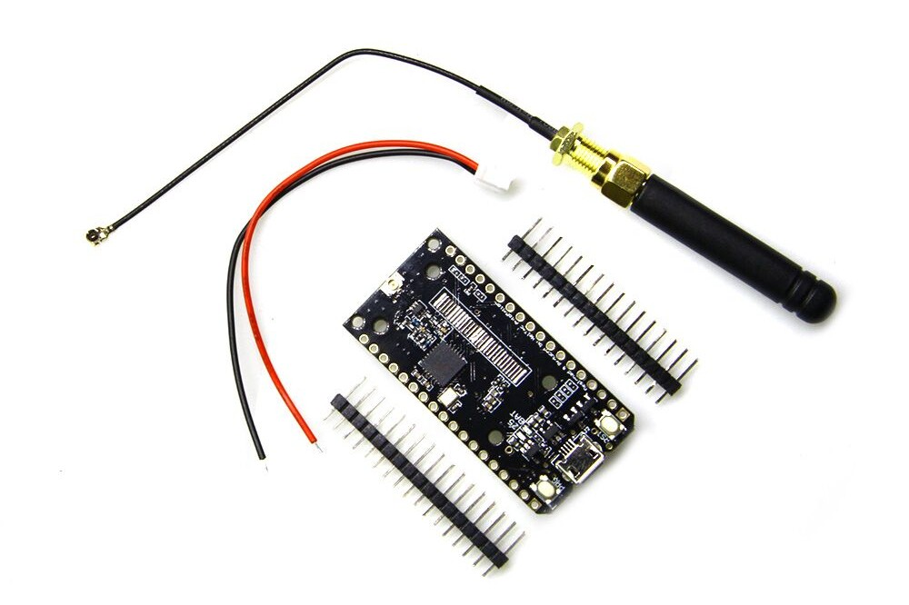

{kind=link}

This document contains photos of the several single channel gateways I built and used. I try to use a little text here as possible, if you want some, read the other documents of the Single Channel Gateway.
The Hallard board looks a lot like the ComResult board, but because it multiplexes the IO pins it has more pins over for sensors or OLEDs etc.
|  |
Hallard Board (empty) |
|  |
| 1-ch Gateway made with Hallard PCB. The Hallard board is on top (including the RFM95) and the Wemos D1 mini is below and glued to the bottom of the case. |
The Hallard + ESP8266 + RFM95 combination makes a perfect singtle channel gateway and is the cheapest way to make a LoRa Gateway over WiFi.
The Comresult board is almost the same as the Halard bord and uses the same compile options. The only differece is the pin-out of the board which is slightly different. As a result the user should configure the configGway.h file for this board differenctly and choose pin-out option 2.
|
| 1-ch Gateway made with the Comresult PCB |
The Comresult board has two mounting holes that enable to screw the board inside a water-proof case. The ESP8266 chip used has only one disadvantage: Due to its sice it does not contain many IO pins and therefore its use is limited and it can only be used as a gateway (Maybe with a temperature sensor)..
The TTGO board is a Wemos ESP32 type board with SX1276 or SX1278 chip included on the boad. Board sold on aliexpress.com in general do have an OLED display included as well. The white ones look best and are made by Heltec.
So except for the case this board contains everything you will need to make your own gateway. And having said that: It is now possible to buy this board with a matching case as well. It will cost you about $25-$30 but than everything is included (except the battery for the TTGO board).
|  |
TTGO Board |
The TTGO board is the same as the Heltec board as far as the gateway is concerned and should be compilerd and configured the same. Only this TTGO board does not have the OLED interface connected but that does not matter for the software.
For the T-Beam board please use pin-out 4 in the configGway.h file. This board is based on the ESP32 chip. It has an internal GPS sensor, can charge (and use) the battery and measure the battery power left. I get questions about this device and its pins, and therefore I like to spend a little more space on this device.
The default behaviour of the device is the same as the Heltec device Pin-4. Only when using its internal sensors, please modify the configGway.h file.
#define GATEWAYNODE 0
#define _CHECK_MIC 0
Below you see the T_Beam in action. The first version was lacking a small wire which has been included by soldering it directly on the board.
I did mark the + and - side of the battery myself. This is because the 18650 battery can be very dangerous if shortened of maltreated. For those that do not believe me, it is the same battery as used in bicycles.
In order to further configure the sensors, please modify the following definitions in configNode.h which should match your device setup.:
#if GATEWAYNODE==1
#define _DEVADDR { 0xAA, 0xAA, 0xAA, 0xAA }
#define _APPSKEY { 0xBB, 0xBB, 0xBB, 0xBB, 0xBB, 0xBB, 0xBB, 0xBB, 0xBB, 0xBB, 0xBB, 0xBB, 0xBB, 0xBB, 0xBB, 0xBB }
#define _NWKSKEY { 0xCC, 0xCC, 0xCC, 0xCC, 0xCC, 0xCC, 0xCC, 0xCC, 0xCC, 0xCC, 0xCC, 0xCC, 0xCC, 0xCC, 0xCC, 0xCC }
#define _SENSOR_INTERVAL 300
// For ESP32 based T_BEAM/TTGO boards these two are normally included
// If included make value 1, else if not, make them 0
#define _GPS 1
#define _BATTERY 1
#endif
Please note that the internal sensors use the APPSKEY and NWKSKey as well as a reserved DEVADDR to work OK. This is because the coded information needs to be sent to the TTN Gateway in a certain format. Of course it is possible to directly send the senor data to the WiFi server but that is not done here. Instead we send the sensor data the same way as would have been done with an external sensor (using LoRa).
Also, by standard we use the lCode mechanism to encode the GPS and Battery data that we send to the MQTT server. Please have a look at the coding mechnism in the include files as well on these web pages in order to understand HOW the data is trainsmitted by the sensors and decoded by the MQTT servers.
The Heltec boad is completely assembled and ready for use. It contain an OLED display and battery interface so it is possible to carry your gateway with you all the time.
{kind=link}
{kind=link}